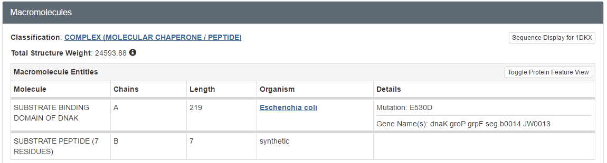
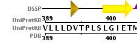

01 Exploring the Protein Data Bank exercises
question Questionsobjectives Objectives
- How to find structures in the PDB database?
- Basic knowledge of working with the PDB database
time Time estimation: 30 minutes
Agenda
In this tutorial, we will deal with:
Search for a structure
Via UniProt
The way of searching for a specific protein structure depends on the data you already have. You might already have the PDB ID (a unique identifier), that’s an easy one. But mostly you have the protein name or you just have a sequence. In the last cases I recommend to start from the UniProt website at http://www.uniprot.org, which is the best annotated protein database in the world. Our first model protein will be the molecular chaperone DnaK from E. coli. Below is an image of the UniProt search box where you can start your search for proteins.

hands_on Explore a PDB structure on the Uniprot web site
- Go to the UniProt website and search for the DnaK protein
- The UniProt search engine returns a list of DnaK protein sequences from a variety of organisms. An entry with accession code P0A6Y8 and entry name DNAK_ECOLI should be near the top of this list.
- Click on the accession code (column Entry) to view the protein page of this DnaK from the model organism Escherichia coli.
- Click on Structure in the left-side menu and then look at the 3D structure databases table.
question Guidelines which PDB structures to select
Which structures (give the 4-character PDB ID) of the C-terminal domain of DnaK should preferentially be use for analysis and why?
solution Solution
Usually, the recommended selection criteria are using an X-ray structure with low resolution and low Rfree factor. Furthermore, the PDB database has pre-calculated a validation report for all of the structures. As an example, have a look at https://www.ebi.ac.uk/pdbe/entry/pdb/4EZX under the section ‘Experiments and Validation’. For many PDB structures, there is also a re-done structure available with a vast amount of informaton on the quality of the X-ray structure and suggested ‘better’ models e.g. (https://pdb-redo.eu/db/4ezx). In our case, we could opt for the structures 1DKX and 4EZX.
This is a difficult example since there are so many high resolution structures available. So, it is recommended to study the articles and compare the available structures to find your favorite structure for further analysis.
Via the Protein Data Bank by PDB ID
You can find structural information directly at the PDB database. The web site of the PDB consortium is located at http://www.wwpdb.org. This web site provides links to all members of the PDB (left side). It is a question of taste which resource you start off with. For X-ray structures, it is currently PDBe, RCSB PDB, PDBj. For NMR structres, you find the BMRB. In today’s course, we focus on the PDB resources only.
Below is an image of the RCSB search box http://www.rcsb.org/pdb/home/home.do where you can start your search for structures.

The PDB file with ID 1DKX contains the atomic coordinates of the molecular chaperone (DnaK) from E. coli.
hands_on Search a structure on the RCSB web site
- Go to the PDB website and type 1DKX in the search box
This will lead you to the same page we got earlier through UniProt.
Via the Protein Data Bank by sequence
In lots of cases we only have a sequence of which we would like to find out if there is structural information. The PDB can be searched using a sequence as input. Here is the sequence of the C-terminal substrate binding domain of DnaK:
DVKDVLLLDVTPLSLGIETMGGVMTTLIAKNTTIPTKHSQVFSTAEDNQSAVTIHVLQGE
RKRAADNKSLGQFNLDGINPAPRGMPQIEVTFDIDADGILHVSAKDKNSGKEQKITIKAS
SGLNEDEIQKMVRDAEANAEADRKFEELVQTRNQGDHLLHSTRKQVEEAGDKLPADDKTA
IESALTALETALKGEDKAAIEAKMQELAQVSQKLMEIAQQQHAQQQTAGADASANNAKDD
DVVDAEFEEVKDKK
The PDB allows sequence searches through the same search box we used before.
There is also an Advanced Search section, with a Blast/Fasta option in the Sequence Features section.

hands_on Hands-on: BLAST search for PDB structure
- Go to the Advanced Search section
- Please select ‘Sequence BLAST/PSI-BLAST’ in the Query type drop down. This method allows you to change some parameters for the search.
- Copy and paste the sequence in the ‘‘Sequence’’ field
- Press ‘‘Submit query’’.
- You should see the same structures popping up as you saw in the UniProt page of DnaK.
The PDB file
Introduction
A PDB (Protein Data Bank) file is a plain text file that contains the atom coordinates of a solved 3D structure of a protein or even DNA. Such coordinate files can be obtained at the Protein Data Bank at http://www.rcsb.org/pdb. Each PDB file has a unique identifier (ID) consisting of 4 characters, the first one is always a number. Note: It has been announced that the 4 character code will change in the future https://www.wwpdb.org/news/news?year=2017\#5910c8d8d3b1d333029d4ea8.
The PDB file with ID 1DKX contains the atomic coordinates of the molecular chaperone (DnaK) from E coli.
hands_on Hands-on: BLAST search for PDB structure
- Go to the PDB website at http://www.rcsb.org/pdb
- Type 1DKX in the search and try to answer the following questions.
question Questions
- How many molecules were solved in this PDB file? What kind of molecules are these (proteins, peptides, DNA, …)?
- Does the structure represent the full protein? If not, how many residues are missing? Hint: Click on the UniProt KB link in the Sequence tab to see the full sequence.
- Was this structure solved by X-Ray or NMR?
- What is the atomic resolution and R-factor?
solution Solution
- Two, called polymers or chains: they are polypeptides 
- To answer this question you can go to the sequence tab at the top:
- 
- Summary: a large chunk of the N-terminus is missing from the structure, the C-terminus is virtually complete.
- X-RAY diffraction, as shown by Experimental Details
- Atomic resolution: 2.00 Ångstrom and R-factor of 0.206
Downloading the structure
The file that holds the 3D coordinates can be downloaded by clicking on Download files in the top right corner and then choosing PDB file (text). For convenience, save this file on your desktop. The filename is the 4-character unique PDB ID.

hands_on Hands-on: Open downloaded PDB file in an editor
- Open this file with a text editor, e.g. WordPad is an excellent tool for that.
- Do you see the different sections in the PDB file? Analyse some ATOM lines and try to explain what kind of data is in each column.
Additional exercises on searching PDB can be found on the basic bioinformatics exercises page.
keypoints Key points
- Protein ID
- Uniprot
- PDB file format
Useful literature
Further information, including links to documentation and original publications, regarding the tools, analysis techniques and the interpretation of results described in this tutorial can be found here.